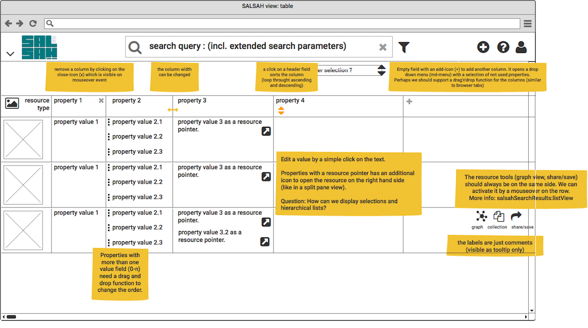

salsahView¶
gridView¶
We can use the gridView component for search results and the list of collections.

salsahView: grid (inspired by the old light table or the LFI news).
listView¶
The listView component is for search results

salsahView: list (inspired by Google’s inbox)
tableView¶
The tableView component is for search results filtered by on resource type!

salsahView: table (inspired by Excel)